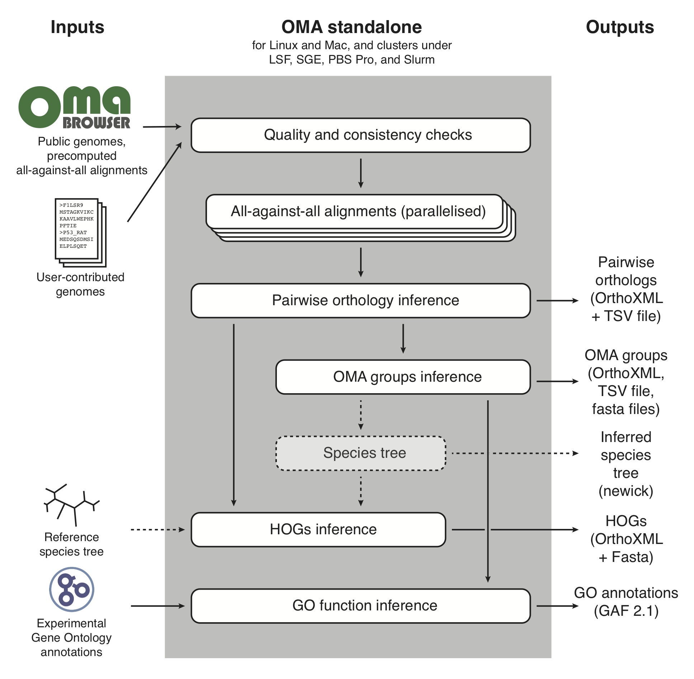

Introduction
The OMA (Orthologous MAtrix) database is a well-established resource for identifying orthologs among publicly available complete genomes. Orthologs are genes that are related through speciation events, and are essential for many analyses, including gene function prediction and species tree reconstruction.
OMA standalone is a standalone package that can infer orthologs using the OMA algorithm on custom genomes. It is also possible to export genomes and their homology relations directly from the OMA web-browser and combine them with custom genomes or proteomes.
OMA standalone computes pairwise orthologs and constructs from those two different types of groupings, the OMA Groups and Hierarchical Orthologous Groups (HOGs). Furthermore, OMA standalone can predict gene function annotations using Gene Ontology terms based on existing annotations from exported genomes, and produces phyletic profiles for OMA Groups and HOGs. See section Possible applications for some further explanations how to use the output of OMA standalone.
Figure 1 provides an overview of the OMA standalone pipeline together with user input and output files that are produced by OMA standalone.
Figure 1: Conceptual overview of the OMA standalone software. Dotted arrows indicate alternative steps (reference species tree either specified as input or inferred from the data).
You can run OMA as a standalone program on your own computer or HPC cluster. Included are the algorithms for OMA itself plus ESPRIT - a tool based on OMA to detect split genes. The software can be run on Linux (x86, both 64bit and 32bit) and MacOSX (x86, 64bit).
A good introduction into OMA standalone is provided in the following article:
Altenhoff et al. OMA standalone: orthology inference among public and custom genomes and transcriptomes. Genome Research, 2019, 29:1152-1163 Please cite this article if you are using OMA standalone for your analysis
For a short summary and pointers to detailed algorithmic publications of OMA, please refer to the OMA browser page:
https://omabrowser.org/oma/about/
For background info on ESPRIT, please refer to this article:
http://dx.doi.org/10.1093/bib/bbr038
If you have specific questions about the installation or the usage of OMA, please contact adrian.altenhoff at inf.ethz.ch or christophe.dessimoz at unil.ch.
Downloads
The current version of OMA standalone can be found here:
See the release notes to get an overview of recent function improvements and bug fixes.
Previous releases of OMA standalone are still available for download.
Installation
You do not need to install OMA standalone on your system; the script will also run if you just call it by using the complete path to bin/oma in the installer folder. But we still encourage you to run the installer script, since it makes working with OMA considerably more convenient.
Alternatively, we now also provide a docker container that can be used directly. See theDocker section for additional information on this.
To install OMA standalone on your system, download the installer, untar the package and run the included installer script:
wget -O oma.tgz https://omabrowser.org/standalone/OMA.2.5.0.tgz # on MacOS you can also use curl: # curl https://omabrowser.org/standalone/OMA.2.5.0.tgz -o oma.tgz tar xvzf oma.tgz cd OMA.2.5.0 ./install.sh /your/install/prefix
If you do not choose an install prefix, OMA will be installed in /usr/local/OMA (for this, you might need to install it using the root account or sudo ).
After installation, make sure the bin folder of OMA is in your PATH variable, e.g., if you are using bash and used /your/install/prefix as installer prefix, add a line in ~/.bash_profile such as:
export PATH=$PATH:/your/install/prefix/OMA/bin
For other shells, choose the appropriate syntax. Of course you can also just use absolute paths to run OMA standalone.
Homebrew/Linuxbrew
Alternatively, OMA standalone is also available on Homebrew and Linuxbrew . To install OMA standalone with Homebrew or Linuxbrew make sure you have installed the respective package and then run
brew tap brewsci/bio brew install oma
Docker / Singularity
Alternatively you can also use a docker / singularity container to run OMA standalone in any environment that allows running containers. You need to bind mount the folder with your dataset into the docker's /oma path, i.e. assuming you want to run the ToyExample with the genomes in /tmp/OMA/ToyExample/DB/*fa , you would need to execute the following command to download and execute OMA standalone:
docker run --rm --name oma -v "/tmp/OMA/ToyExample:/oma" \
dessimozlab/oma_standalone:latest oma
This would generate the output files as specified in the default parameters file in /tmp/OMA/ToyExample/Output/ . You can also pass the usual command line arguments as described below.
On HPC, usually you will need to convert the docker container to a singularity container. The following command will convert the OMA standalone docker container from dockerhub to a local singularity image file:
singularity build --fakeroot omastandalone.sif docker://dessimozlab/oma_standalone
The container can then be run with a similar command as the docker instance:
singularity run --bind /tmp/OMA/ToyExample:/oma omastandalone.sif oma
Usage
First, set up a working directory. Copy the file parameters.drw into this folder (if you installed OmaStandalone, you can alternatively run OMA -p to get the parameter file with default values) and change it to your needs. Create a directory DB in your working directory that holds the genome data in FASTA format (see "File formats") and copy your data into this directory. If you want to use ESPRIT, the FASTA file containing the contigs should be called {YourGenome}.contig.fa . Then, simply call OMA from your working directory to run OMA or ESPRIT
If you have not installed OMA yet, use the complete path to bin/oma in the installer folder to start the script.
As an example, assume you installed OMA in /your/install/prefix and want to use ESPRIT on two genome files and one file with contigs (all in /home/you/fasta , do something like this:
# create working directory mkdir myWorkingDir cd myWorkingDir # create DB directory in working directory mkdir DB # copy FASTA files into DB directory cp /home/you/fasta/yourFirstGenomeFile.fa DB/ cp /home/you/fasta/yourSecondGenomeFile.fa DB/ cp /home/you/fasta/yourContigFile.contig.fa DB/ # generate default parameter file OMA -p # adjust parameters vim parameters.drw # run OMA OMA
To get a first impression of OMA you could cd into the ToyExample directory, have a look at parameters.drw and run OMA to process our tiny example files.
Most default parameters have sensible default values. One important exception is the OutgroupSpecies parameter (added in OMA standalone release 2.4.0), which needs to be set by the user if you do want to infer Hierarchical Orthologous Groups (HOGs) and also the species tree (parameter SpeciesTree set to estimate ). Analyses of HOGs are very sensitive to errors in the species tree rooting, which motivated us to deliberately not provide a default value for this parameter.
Command-line options
OMA standalone has a few commandline options you can set. The available options together with a brief description is available using the "-h" option, i.e. OMA -h
OMA -h
bin/oma - runs OMA standalone
bin/oma [options] [paramfile]
Runs the standalone version of the Orthologous MAtrix (OMA) pipeline
to infer orthologs among complete genomes. A highlevel description
of its algorithm is available here: http://omabrowser.org/oma/about
The all-against-all Smith-Waterman alignment step of OMA requires
a lot of CPU time. OMA standalone can therefore be run in parallel.
If you intend to use OMA standalone on a HPC cluster with a scheduler
such as LSF, PBS Pro, Slurm or SunGridEngine, you should use the
jobarray option of those systems,
e.g. bsub -J "oma[1-500]" bin/oma (on LSF).
qsub -t 1-500 bin/oma (on SunGridEngine)
In case you run OMA on a single computer with several cores, use
the -n option.
Options:
-n <number> number of parallel jobs to be started on this computer
-v version
-d <level> increase debug info to <level>. By default level is set to 1.
-i interactive session, do not quit in case of error and at the end
of the run.
-s stop after the AllAll phase. This is the part which is parallelized.
The option can be useful on big datasets that require lot of
memory for the later phases of OMA. It allows to stop after the
parallelized step and restart again a single process with more
memory.
-c stop after database conversion. This option is useful if you
work with a large dataset and/or the filesystem you use is
slow.
-W <secs> maximum amount of Wall-clock time (in secs) that the job should
run before terminating in a clean way. This option has only an
effect in the all-against-all phase. If the job terminates
because it reaches the time limit, it quits with the exit
code 99.
-p copy the default parameter file to the current directory. This
is useful if want to analyse a new dataset and previously
installed OmaStandalone.
-h/? this help
paramfile path to the parameter file. it defaults to ./parameters.drw
EXIT
0 normal exit
1 a general error (i.e. configuration problem) occured
99 reached timelimit (provided with -W flag)
Required Resources
Depending on the dataset to be analysed, OMA can require quite a significant amount of computational resources, i.e. RAM and cpu time. Most computing time is spent to compute the all-against-all sequence alignments, which is why this part has been parallelized. Although cpu intensive this phase does not require too much memory. As a rule of thumb you can assume it requires roughly 10 times the size of your DB folder, but at minimum 650MB. The second part of OMA runs sequential on a single core, but it requires a lot more memory: Asymptotically it grows quadratic in the number of genomes. From a few real data runs we estimated that as a rule of thumb, you should count with 400MB * pow(nr_genomes, 1.4) . Obviously this depends also a lot on the size of your genomes. 60 metazoas have been successfully computed using 120GB, and for the same number of bacterial genomes, 50GB were reported to be enough.
Because of this imbalance regarding the required memory the OMA starter script has command line option -s to run only the first part of the OMA pipeline. Using this option, the computation can be split into a parallel phase with little memory requirement , and a single process requiring a lot more RAM. Running the OMA thus becomes a two stage process like this:
# first stage, little memory: OMA -s # once first stage terminated, run second stage OMANote that this staging is mostly useful on computing clusters where often memory and cpu time has to be reserved at job submission.
Parallelization
The all-against-all phase of OMA is the most time-consuming one, but it can be parallelized (unlike all other steps, which cannot run in parallel). The way it works is that the parameter "AlignBatchSize " and the total number of genomes (n) will determine into how many chunks the all-against-all phase is divided. AlignBatchSize will split the n*(n-1)/2 genome pairs further into chunks of at most "AlignBatchSize " alignments. The larger AlignBatchSize is, the fewer (and hence longer) jobs will be executed.
Scheduling is straightforward: all compute processes need to start from the same directory, and each one will try to do an equal amount of chunks sequentially. However, before starting a new chunk, each process ensures that it has not yet already been processed by another process (i.e. no result file yet exists).
On a single computer with multiple processors and/or cores, it is recomended to start "N" parallel processes with the "-n" option, i.e.
OMA -n 5will start 5 parallel jobs. Note that on HPC with schedulers there is a better way described below
Therefore, there is not need to specify which parts are to be done by which process. One should only ensure that all processes start from a shared directory, such that each chunk gets computed by a single process only.
Parallelization with LSF, PBS Pro, Slurm, or SunGridEngine
With a scheduler such as LSF, SGE or Slurm, running parallel jobs is particularly easy, as the parallel jobs can be start using as a job array. OMA will automatically spread the work for the all-against-all among all processes. For a brief discussion on the required resources refer to the section below Do not start OMA with the -n option for that. Instead, use a job array with one of the supported schedulers below (the example is to start 100 jobs in parallel).
New in 2.0: The user should now explicitly set the number of total processes that should run in the job array. This is done by setting the environment variable 'NR_PROCESSES'. E.g. in bash/tcsh use
export NR_PROCESSES=100 # bash setenv NR_PROCESSES 100 # tcshprior to submitting the job. The main advantage of this new form is that single jobs can be more easily resubmitted, and very large job arrays that do not all run simultaneously will work more reliably.
LSF
export NR_PROCESSES=100 bsub -J "OMA[1-$NR_PROCESSES]" -o "out.%I" "OMA"
Sun Grid Engine (aka Oracle Grid Engine)
export NR_PROCESSES=100 qsub -t 1-$NR_PROCESSES "OMA"
PBS Pro
Prepare a job script called e.g. job.sh:
#!/bin/bash # set the number of nodes and processes per node #PBS -l select=1:ncpus=1:mem=1000mb # set max wallclock time #PBS -l walltime=01:00:00 #PBS -J 1-100 export NR_PROCESSES=100 OMAThe script can then be submitted as follows:
qsub job.sh
Slurm
sbatch --array=1-100 -N1 <<EOF #!/bin/sh export NR_PROCESSES=100 /absolute/path/to/bin/OMA EOF
Adding/Updating new genomes
It is possible to add new genomes without recomputing the all-against-all phase for pre-existing genomes. To do so, simply add the new fasta databases in the DB/ directory and re-run OMA. Likewise, it is possible to update a genome by deleting the old genome from the DB/ directory, and adding a new file. Important: to avoid clashes with previously computed results, the updated genome must use a different filename than any previously computed result.
Exporting precomputed all-against-all
Additionally it is possible to export the precomputed all-against-all for any of the >2000 genomes currently in the oma database. This can result in a massive speedup of time to run omastandalone. To export genomes, go to https://omabrowser.org/export and select the genomes you wish to include in your omastandalone run. The resulting compressed tar file should be downloaded and uncompressed in the root directory of your analysis. Then simply run omastandalone as normal.
Advanced usages of OMA standalone
In this section we collect a few ideas to push the limits of OMA standalone.
Specifying the maximum amount of computing time
Often it is desirable to have many short jobs than a few long running ones, especially in a HPC environment. There, usually each job is limited to a certain amount of time, where short jobs usually get a higher priority assigned. With the -W command line option, one can inform OMA of the maximum amount of time (in seconds) it should use before exiting in a clean way. Once this time limit is reached, OMA terminates with an exit value of 99, which can be used on many schedulers to re-queue the job automatically. On LSF, you can use for example -Q "99", SGE (if not deactivated by the cluster configurations) will reschedule jobs automatically. The exit code has changed in release 2.3 in order to support the SGE platform more easily.
Sensible values for -W are usually between 3600 (1 hour) or higher. Note that this flag does not replace any resource allocation option from the scheduler.
Utility tools
OMA standalone ships with a few additional utility tools to simplify working with OMA. We briefly introduce them here. All tools are shell script located in OMA's bin directory. All tools provide some additional help information with the command line option -h
oma-cleanup
In case a few processes to compute the all-vs-all get prematurly terminated or killed for whatever reason, they usually leave back lock files that need to be removed.
oma-cleanupis a simple shell script that removes all of the lock files. Before using this tool, make sure that no OMA process is still running.
oma-status
The parallel all-vs-all phase of OMA standalone can take quite a lot of time to compute and for the process themselves it is rather difficult to estimate how far the overall progress advanced already. We therefore provide a tool that reports the overall progress of the all-vs-all phase with the following command:
oma-statusNote also the command line options of the tool that can give you extended reporting, parallel calculations, etc. You can run oma-status also while computations are still ongoing.
oma-compact
The all-vs-all phase can produce a huge amount of files, specially for big genomes. On many HPC clusters users have restrictions on the number of files that can be stored. oma-compact is a utility tool that will compact the Cache/AllAll directory of finished genome pairs to just a single file per pair:
oma-compactThe tool can be started repeatetly and also during ongoing computations.
Applications for OMA standalone
In this section we provide a few hints on best practices on how to use OMA standalone results in possible applications.
Species tree reconstruction
The most common approach to reconstruct a species phylogeny is to build a supermatrix from many marker loci. For this it is of outmost importance to avoid paralogous relations within each loci. OMA Groups (or simply Orthologous Groups) is the most suitable type of output. Each group forms a maximum clique in the graph of pairwise orthologs. OMA standalone builds a directory called OrthologousGroupsFasta , that contains for each group a fasta formatted file with their unaligned sequences.
A standard approach would therefore be to build a MSA for each of the marker gene groups, concatenate them and infer an tree from the superalignment.
Predict gene functions of a new genome
OMA can be used to annotate the function of proteins from a new genome / proteome using existing gene ontology annotations from other species in OMA. OMA propagates annotations based on shared OMA group membership - the details are explained in this paper. For this to work, you need to export a few relevant and well annotated genomes from the OMA Browser. By adding your own proteome to the dataset, and running OMA standalone, your output directory will eventually contain a gaf formatted annotations file named gene_function.gaf .
As not all annotation terms make sense in all domains of life, the parameter CladeDefinition can be used to limit the propagation to the certain parts of the tree of life.
Dynamics of Genome Evolution
The Hierarchical Orthologous Groups (HOGs) of OMA capture the dynamics of genome evolution, i.e. the joint evolutionary events acting on the set of species under consideration. The model of OMA tries to explain the evolutionary history using speciations, duplications and losses. HOGs are groups of genes that descended from a single ancestral gene at a specific taxonomic level. OMA standalone will computed these nested groups and store them in the community standard OrthoXML format. The output file is called HierarchicalGroups.orthoxml .
The root-level grouping provides something similar as a homologous group. As this specific grouping can be useful in itself, OMA standalone produces for each root-level HOG a fasta file in a subdirectory named HOGFasta .
For more complicated analyses of the evolutionary dynamics, extracting groups at specific taxonomic levels, creating a phylostratetic analysis and many more things, we developed the special purpose tool pyHAM to work with orthoxml files.
Phylogenetic Profiling
Orthology is also used to build phylogenetic profiling—patterns of presence and absence of genes across species. OMA standalone produces two forms of output: a binary matrix with species as rows and OMA groups as columns, indicating patterns of presence or absence of genes in each group; a count matrix with species as columns and HOGs as rows, indicating the number of genes in each HOG. Phylogenetic profiling tools can help to identify from this information proteins that are involved in the same biological pathway.
File Formats
Input Files
OMA uses two different input formats: FASTA files for genome input and a Darwin file for parameter input.
The Fasta format is explained in detail on wikipedia.
As almost everywhere else, OMA uses the greater-than symbol ">" to distinguish labels from sequences. Each sequence in a genome is supposed to have its own label. Have a look at the FASTA files included in ToyExample/DB in our installer package for some example files. The fasta genome files need to have a ".fa " extension to be recognised as such.
In case your genomes contain multiple alternative splicing variants, you can add a text-based file per genome called DB/{YourGenome}.splice that put together the different splicing variants, e.g. to indicate that the three splicing variants ENSP00000384207, ENSP00000263741 and ENSP00000353094 are encoded by the same gene, add the following line to the splice file:
ENSP00000384207; ENSP00000263741; ENSP00000353094OMA requires that the individual IDs are unique prefixes of your FASTA headers.
Poor quality genomes often suffer from truncated gene models. If you name the FASTA files of poor quality genomes {YourGenome}.contig.fa , they are treated specially: OMA will ignore the LengthTol condition, such that orthology will also be established for non-full-length homologous pairs, i.e. the condition that the fraction of the length of the effective pairwise alignment divided by the length of the shorter sequences must be at least LengthTol is ignored. For ESPRIT, genomes labeled with the .contig.fa extension are considered for searching for split genes.
Parameter files use Darwin syntax. Key-value-pairs are written as
key := value;
Note the colon in := and the semicolon at the end of the line. If your parameter file does not use valid Darwin syntax, OMA will print out a short message and stop its execution.
OMA Output Files
The output of OMA gets written to files stored in a directory Output in your working directory. This can be changed by changing the OutputFolder parameter, There are text files and directories organized as described in Table 1. If not all output files are needed, note that the production of some of them can be disabled (see Table 4 below).
| Filename or Directory | Contents |
|---|---|
| Map-SeqNum-ID.txt | Lists all genes of all datasets with their unique sequence number and the labels read from the FASTA files. |
| OrthologousGroups.txt | The groups of orthologs are given as one per row, starting with a unique group identifier, followed by all group members, all separated by tabs. |
| OrthologousMatrix.txt | More compact version of OrthologousGroups.txt . The groups of orthologs are given as matrix with group per row and one genome per tab-separated column. Numbers refer to entry number as listed in the file Map-SeqNum-ID.txt . |
| OrthologousGroups.orthoxml | The OMA groups of orthologs stored in orthoxml format. |
| OrthologousGroupsFasta/ | Each OMA group is provided as a separate Fasta file, with the species name as identifer. This format is particularly suitable as starting point for a phylogenetic reconstruction. |
| PairwiseOrthologs/ | The textfiles in Output/PairwiseOrthologs are named according to {genome a}-{genome b}.txt and consist of a list of pairwise orthologs for the two given genomes. Every pair is listed only once, and in no particular order. Each line in the file contains one pair; all fields are separated by tabs. In the first two field, the unique IDs of the proteins are given. The next two fields contain the labels of the proteins, and in the last two fields, the type of orthology and (if any) the OMA group is given. |
| OrthologousPairs.orthoxml | The pairwise orthologs stored in orthoxml format. Each group in the file will have orthologs between genes from only two genomes. |
| HierarchicalGroups.orthoxml | The hierarchical groups of orthologs in OrthoXML format. A detailed description of how these groups are computed is forthcoming. |
| EstimatedSpeciesTree.nwk | The inferred species tree on which the hierarchical groups inference procedure is based, in Newick format. The species tree is estimated from the 1% most complete OMA Groups using a weighted least squares distance tree inference approach with mid-point rooting. |
| EstimatedSpeciesTree.phyloxml | The infered species tree in phyloxml format, otherwise identical to EstimatedSpeciesTree.nwk |
| HOGFasta/ | For each root HOG group we provide a separate Fasta file with all the protein sequences clustered in it. This format is particularly suitable as a starting point for a phylogenetic reconstruction of a gene tree, as root HOGs represent gene families which originated the common ancestor of all the species in that particular HOG. |
| used_splicing_variants.txt | If UseOnlyOneSplicingVariant is activated and splicing information is available, the variant which has been used for calling the orthologous relations is stored in this file. The format is a tab-delimited text file with the species in the first column and the id of the used splicing variant in the second column. |
| gene_function.gaf | The predicted Gene Ontology function assignments as a gaf formatted file. The file is only created if DoGroupFunctionPrediction is set to true in the parameter file and at least some exported genomes with GO annotations are included in the analysis. |
| PhyleticProfileOMAGroups.txt | The phyletic profiles are given as one OMA Group per row, starting with a group identifier, followed by a presents/absents indicator (i.e. 0: absent, 1: present) per species in the group as columns. The first row contains the species for each column. The columns are all tab-delimted. |
| PhyleticProfileHOGs.txt | The phyletic profiles are given as one HOG per row. Only the root level of each HOG is used. Every row starts with a group identifier, followed by the number of entries per species in the group as columns. The first row contains the species labels in each column. The columns are all tab-delimited. |
Parameters
All parameters for OMA and ESPRIT are set in a parameters file. There is an example file in the OMA installer package; we encourage you to copy this file into your working directory and change it to your needs, or use the command OMA -p to create a default parameters file.
The parameter file consists of three main parts: First, general parameters for OMA are set. Table 3 describes these parameters in detail.
Next, there are a few optional parameters, listed in Table 4, to avoid producing particular output files. Indeed, in large analyses, disabling the generation of unused output might save a substantial amount of computing time and might drastically reduce the number of produced files.
The third part are the parameters which are unique to ESPRIT. Check the ESPRIT section for details on them.
| Parameter | Meaning | Default |
|---|---|---|
| InputDataType | Type of input sequences. This can be set either to 'AA' for amino acid sequences or 'DNA' for nucleotide sequences | AA |
| OutputFolder | Folder to which the output is written. At each run, the content of this folder will be overwritten. Don't store any important files in it. The OutputFolder must not contain any spaces. | Output |
| ReuseCachedResults | If you want to recompute everything from scratch every time the script is run, set this to false . | true |
| AlignBatchSize | In the all-against-all phase, each genome pair is split in smaller chunks of AlignBatchSize protein comparisons. The larger this number, the longer each unit runs, and the fewer files get produced. This allows to adjust the frequency of milestone steps (e.g. in case of computer crash) or to process few but large genomes with many CPUs efficiently. | 1000000 |
| MinScore | Alignments which have a score lower than MinScore will not be considered. The scores are in Gonnet PAM matrices units. | 181 |
| LengthTol | Length tolerance ratio. If the length of the effective alignment is less than LengthTol * min( length(s1), length(s2) ), then the alignment is not considered. | 0.61 |
| StablePairTol | During the stable pair formation, if a pair has a distance provable higher than another pair (i.e. StablePairTol standard deviations away) then it is discarded. | 1.81 |
| VerifiedPairTol | Tolerance parameter for the detection of differential gene losses using a third genome. The larger the tolerance, the liberaler the algorithm assigns orthologous relations. A detailed description is provided in https://doi.org/10.1093/nar/gkl433. | 1.53 |
| MinSeqLen | Any sequence which is less than MinSeqLen amino acids long in regular genomes is not considered. | 50 |
| UseOnlyOneSplicingVariant | Enables/disables the filtering on a single representative splicing variant. If enabled, OMA selects the variant that has the most homologous matches with all other genomes. Orthology inference is then only based on this variant. If disabled, alternative splicing variants will usually be inferred as paralogs. | true |
| StableIdsForGroups | Enables/disables the generation of stable identifiers for OMA groups (and Hierarchical Groups if the top-down algorithm is selected). The identifier consists of a prefix to determine the type of the group ('OMA' or 'HOG'), and a subsequence of the amino acid sequence uniquely present in this group. The computation of these ids might require a substantial amount of time. The ids are stored in the OrthoXML files only. | false |
| GuessIdType | Enable/disable guessing of the id types while generating the orthoxml file. In this context we refer to ID type guessing as the task to guessing whether an ID should be stored in the geneId, protId or transcriptId tag. If the flag is set to false, the whole fasta header is used and stored as is in the protId tag. | false |
| DoHierarchicalGroups | Enables/disables and selects the algorithm to compute the hierarchical orthologous groups (HOGs). Valid parameters are false , 'top-down' and 'bottom-up' . The top-down approach was the only algorithm until OMA standalone 2.0. Note: Since version 2.4.0, the default approach to infer is now the bottom-up approach. But existing parameter files will not be changed automatically. | 'bottom-up' |
| SpeciesTree | The hierarchical groups require a (partially) resolved species phylogeny. With the parameter SpeciesTree the user can specify a phylogeny in Newick-format, or, by setting the variable to "estimate", compute a species tree based on the OMA Groups and use this one. | estimate |
| OutgroupSpecies | A list of species names that are out-group species. The out-group species are used to properly root the estimated species tree. Since HOG inference highly depends on a correctly rooted species tree, we do not provide working default value. You must set this parameter explicitly either to the set of out-group species names, or alternatively, to 'none', in which case a mid-point root will be selected. Note that this rooting is likely to be wrong, so we strongly discourage this setting. | [] |
| MinEdgeCompletenessFraction | The cutoff in GETHOGs bottom-up algorithm to make an edge trusted in the orthology graph among HOGs. This parameter applies only to the bottom-up approach. See parameter DoHierarchicalGroups for additional information. | 0.80 |
| ReachabilityCutoff | The cutoff of "average reachability within two steps" defines up to what point a cluster is split into sub-clusters. Details on this parameter are explained in http://doi.org/10.1371/journal.pone.0053786. This parameter applies only to the top-down HOG inference approach. See parameter DoHierarchicalGroups for additional information. | 0.65 |
| MaxTimePerLevel | Define maximum amount of time (in sec) spent by the program for breaking every connected component of the orthology graph at its weakest link on a given taxonomic level. If set to a negative value, no time limit is enforced. Once the time limit is reached, OMA will treat the remaining connected component at the lower level (groups won't span over the deeper node). This paraaameter applies only to the top-down HOG inference approach. See parameter DoHierarchcialGroups for additional information. | 1200 |
| DoGroupFunctionPrediction | Compute Gene Ontology function predictions based on the OMA Groups assignments. The predictions are then stored in a gaf file. Computing these predictions can take a substantial amount of time. Note: Predictions are based on transferring existing annotations from genomes. Only genomes exported through the OMA Browser export interface have usable input annotations. | true |
| AuxDataPath | Path where auxillary data files will be stored. If not specified, the data will be stored under ~/.cache/oma . This directory should be writeable by the user running OMA standalone. OMA will store auxillary files, such as the Gene Ontology definitions in there. For datasets with exported AllAll files, we directly ship the necessary files from the OMA Browser and change the default value of this parameter to ./data/ . We also recommend to do this if you run OMA standalone using docker/singularity. | ~/.cache/oma |
| GroupFunctionCutoff | Parameter to specify the fraction of genes in a group that need to be annotated with a GO term in order to propagate the annotation to the unannotated group members. The parameter ensures that predictions are not propagated too liberally. Note that it requires at least the specified fraction of genomes to be exported from the OMA Browser. | 0.5 |
| CladeDefinition | Path to tab-separated file that provides a mapping from the species names to the clade/group to which annotations should at most be propagated. If set to default , the algorithm infers a species tree an propages GO annotations to user genomes only within some predefined clades. These predefined clades are 'Amphibia', 'Archaea', 'Arthropoda', 'Bacteria', 'Clupeocephala', 'Dictyostelium', 'Fungi', 'Mammalia', 'Nematoda', 'Sauria' and 'Viridiplantae'. If the parameter is set to false or none , no limitations on the clades are used to propagate the function annotations. | default |
| Parameter | Meaning | Default |
|---|---|---|
| WriteOutput_PairwiseOrthologs | Switches to disable the generation of pairwise ortholog output files if set to false . | true |
| WriteOutput_OrthologousPairs_orthoxml | Switches to disable the generation of the pairwise ortholog output file in OrthoXML format if set to false . | true |
| WriteOutput_OrthologousGroupsFasta | Switches to disable the generation of orthologous group output files (Fasta format, one file per group) if set to false . | true |
| WriteOutput_HOGFasta | Switches to disable the generation of hierarchical orthologous group files (Fasta format, one file per group) if set to false . | true |
| WriteOutput_PhyleticProfileOG | Switch to disable the generation of the phyletic profiles based on the orthologous groups if set to false . | true |
| WriteOutput_PhyleticProfileHOG | Switch to disable the generation of the phyletic profiles based on the root level HOGs if set to false . | true |
ESPRIT
ESPRIT can be used to identify split genes in low quality genomes. In essense, it tries to find gene fragments in genomes named {YourGenome}.contig.fa that when combined, exists as a full length gene in other genomes. See http://dx.doi.org/10.1093/bib/bbr038 for details on the methodology.
Esprit Parameters
ESPRIT also needs to operate on computed all-vs-all alignments. It therefore shares all the parameters from OMA that are relevant to the all-vs-all phase, which are InputDataType , AlignBatchSize , MinScore , MinSeqLen , and LengthTol .
The more specific parameters that only affect the ESPRIT algorithm are explained in Table 5. Note that changing the ESPRIT parameters will not have an effect unless you set the boolean variable UseEsprit to true .
| Parameter | Meaning | Default |
|---|---|---|
| UseEsprit | You can either set this to true , which will enable ESPRIT and shut down the parts of OMA that are not directly needed for ESPRIT, or set it to false to make no use of ESPRIT at all. | false |
| DistConfLevel | Confidence level variable for contigs. This is the parameter tol described in the paper. | 2 |
| MinProbContig | Minimal proportion of genomes with which contigs form many:1 BestMatches to consider that we might be dealing with fragments of the same gene. This is the parameter MinRefGenomes described in the paper, normalized by the total number of reference genomes. | 0.4 |
| MaxContigOverlap | Maximum overlap between fragments of same gene from different contigs. | 5 |
| MinSeqLenContig | Any sequence which is less than MinSeqLenContig amino acids long in contigs is not considered. | 20 |
| MinBestScore | Minimum best score for BestMatch in scaffold recognition. | 250 |
ESPRIT Output
ESPRIT stores its output files in a directory calledEspritOutput in your working directory. The output consists of three text files and one tarball. In the tarball, FASTA files with the MSAs of the hits ESPRIT found are stored. The other three files are explained in detail in Table 2.
| Filename | Contents |
|---|---|
| params.txt | This file is kept as a reference and contains all parameters used in the current run. |
| hits.txt | All hits found by ESPRIT are listed in this file. It is a list of contigs, ordered according to their position relative to the putative ortholog. Each line describes one contig, the fields are separated by tabs. In the first field, the fragment pair ID is printed; the next two fields contain the labels of the first and second fragments found in this hit. The forth and fifth fields contain the label of the corresponding full gene and its genome name. Then follows the distance difference between the two fragments and the number of positions between them (i.e. the gap); at last, an array is listed containing the IDs of all s3 genes corresponding to this hit. |
| dubious.txt | ESPRIT often detects more candidate pairs than it will list in the hits.txt file, but not all of them survive the quality check. Still, if you want to see which triplets have been filtered out, have a look at dubious.txt where they are still listed. The file format is the same as for hits.txt . |
Getting help
The preferred way to get help about OMA is via the Biostars community resource. Please consider asking your question there, including the tags "OMA" and "orthologs".
If your question requires privacy, we are also reachable by email at contact@omabrowser.org.
License
OMA standalone is licensed under the Mozilla Public License Version 2.0. For more info, please consult the following page:
http://www.mozilla.org/MPL/2.0/
In a nutshell, OMA standalone is open source and free for commercial and non-commercial use.
Software distributed under the License is distributed on an "AS IS" basis, WITHOUT WARRANTY OF ANY KIND, either express or implied. See the License for the specific language governing rights and limitations under the License.
If you use OMA standalone, please cite Altenhoff et al, OMA standalone: orthology inference among public and custom genomes and transcriptomes, Genome Research, 2019, 29:1152-1163